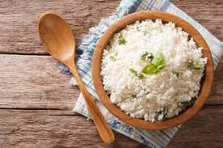
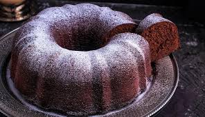
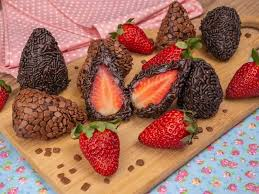

Arroz de Couve-Flor
Itens Utilizados:
- Arroz
- Couve-Flor
- Cebola média
- Azeite
Modo de Preparo:
Deixe a couve-flor picada. Adicione os ingredientes e refogue bem. Adicione sal, tampe a panela e deixe cozinhar.
Bolo de Café
Itens Utilizados:
- Farinha de Trigo
- Açúcar
- Café Coado
- Chocolate em Pó
- Ovos
Modo de Preparo:
Bata o acúcar, as gemas e o café. Adicione farinha, chocolate e mexa bem. Bata as claras e junte à mistura.
Coxinha de Brigadeiro
Itens Utilizados:
- Leite Condensado
- Mateiga
- Morango
- Chocolate em Pó
- Chocolate Granulado
Modo de Preparo:
Junte o leite condensado, chocolate em pó e a manteiga. Aqueça no fogo baixo. Envolva os morangos e passe no granulado.